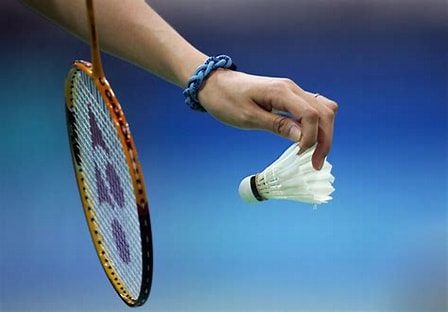
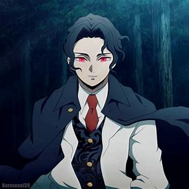
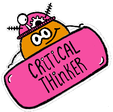
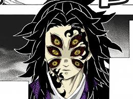

Pranav Ravindra
🚀 Welcome to my website!
Over here, you will get to know a little about me, and see some of the projects I've worked on , badges and certificate I have earned, and more hope you like it
📜 Hobies an interests
I like coding because you are always learning and challenging yourself! Whether you are learning a new programming language, trying out a new framework, or trying to solve a problem with a new algorithm, you are always stretching your mind. Now don’t get me wrong, the learning curve for coding is pretty steep. However by letting yourself make those mistake and experience those failures, that is when you grow the most. I’ve learned so much by overcoming the challenges that come with coding. Not only does coding make you a better problem solver but it also teaches you patience, perseverance, and discipline. Coding pushes you outside of your comfort zone in a good way!

Badminton is one of the few sports that is great for all ages since it is a non-contact sport and has very light equipment. This makes it easy to pick up a racket and birdie and just start playing! (Don’t mistake this easy-to-get-started property of badminton as being easy-to-master though, since it certainly isn’t). Since badminton is a non-contact sport, you don’t have to worry about players tackling or pushing each other. This makes badminton ideal for a family activity or a social gathering among friends, even with minimal knowledge of what badminton even is.
I like anime because there are no limits with anime. The scenes are not restricted to what can realistically be filmed on a set with physical people, which means a show could have ghosts, pirates, samurais, or space cowboys. Anything could happen. And it will look beautiful in the process. It might even inspire you to start drawing yourself.
👩🏽🚀 Projects
Generative Art Link: https://stayq.us/cs/QRPCZEUA
.png)
🏆 Accomplishments
Upcoming Projects😊
The best way out is always through
-Robert Frost
🌮 My Faovurite Anime Charcter and About It
Kokushibhou
Kokushibo (黒こく死し牟ぼう Kokushibō?) is a major supporting antagonist of Demon Slayer: Kimetsu no Yaiba. He is a demon affiliated with the Twelve Kizuki, holding the highest position, Upper Rank One (上じょう弦げんの壱いち Jōgen no Ichi?).[2]
Appearance
Kokushibo is a tall and muscular man with pale skin and long, spiky black hair with red tips that he kept in a ponytail. His most notable feature is the three sets of eyes on his face with yellow irises and red sclera that have black straight lines diverging from each iris. His middle set of eyes features the kanji of "Upper Rank (上じょう弦げん Jōgen?)" and "One (壱いち Ichi?)". Kokushibo also has red markings resembling flames on the top left side of his forehead and the bottom right of his chin. His appearance is described to be extremely dignified and majestic by the Mist Hashira, Muichiro Tokito.[8] Kokushibo wears a purple-and-black bee-hive patterned nagagi kimono and black umanori-styled hakama pants tied with a white uwa-obi. He carries a fleshy katana at his waist that has eyes in the space between the tsuka ito wrapping of the handle of his sword. The tsuba and blade are shown to have eyes and veins.
Personality
Kokushibo is reserved, silent, and aloof, maintaining an aura of unnerving tranquillity and mystery that compliments his position as Upper Rank One. He rarely speaks; when he does, he talks in a slow and emphatic sense that gives more gravitas and authority to his words. He is an adamant rule-follower, punctual, and he shows a great deal of respect to the hierarchy of the Twelve Kizuki, as seen at the Upper Rank gathering.[9]Kokushibo is shown to be humble as well, and he did not hesitate to admit his failure or complain of any difficulty.He displays a very strong sense of loyalty towards Muzan Kibutsuji, with most of his actions being done with the sole purpose of fulfilling Muzan's goals. Despite exhibiting outward reservation, dignity, and humility, there is a cold and unforgiving side to his personality; his words can be extremely harsh, especially when reprimanding individuals. His threats come off as nothing short of cruel and overwhelmingly serious, and he demands absolute obedience.
Thanks for watching!